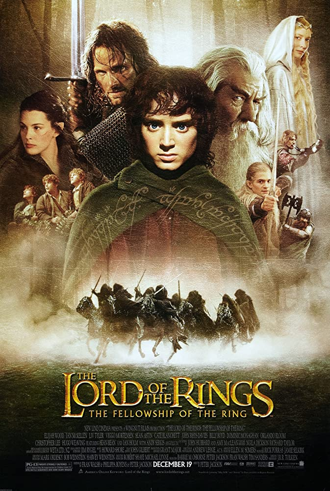

Top Rated Movies
| Cover | Rank | Nume | Anul aparitiei | IMDb Rating |
|---|---|---|---|---|
 |
1 | Inchisoarea ingerilor | 1994 | 9.2 |
 |
2 | Nasul | 1972 | 9.1 |
 |
3 | Nasul II | 1974 | 9.0 |
 |
4 | Cavalerul negru | 2008 | 9.0 |
 |
5 | 12 oameni maniosi | 1957 | 8.9 |
 |
6 | Lista lui Schindler | 1993 | 8.9 |
 |
7 | Stapanul Inelelor: Intoarcerea Regatului | 2003 | 8.9 |
 |
8 | Pulp Fiction | 1994 | 8.9 |
 |
9 | Cel bun, cel rau, cel urat | 1966 | 8.8 |
|  | 10 | Stapanul Inelelor: Fratia Inelului | 2001 | 8.8 |